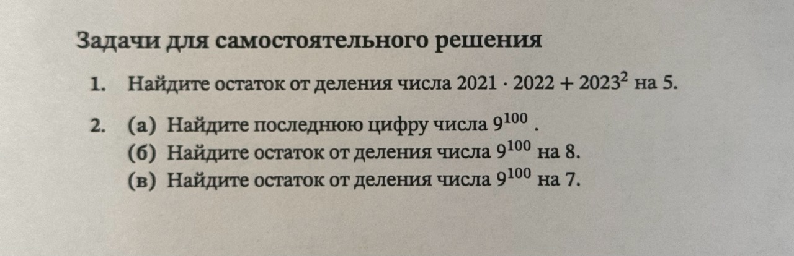
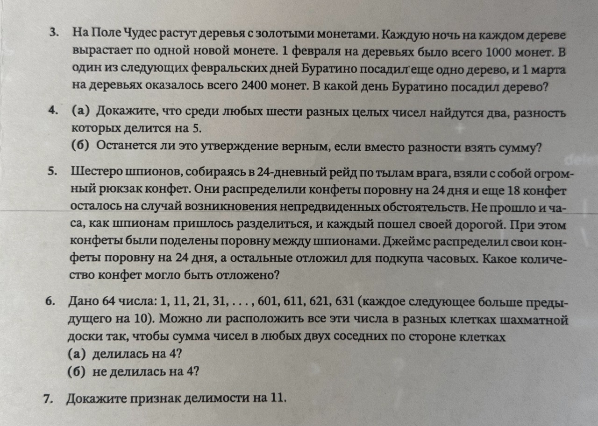

Спецматематика, 6 класс · деление с остатком
Циферблат остатков
часы, у которых столько делений, сколько ты скажешь
Делений на циферблате
2023 = 5 · 404 + 3
Стрелка делает полные круги, а останавливается там, где кончается число. Место остановки и есть остаток.
Обычные часы считают по 12: стрелка прошла 12 часов и снова на нуле. А если делений 5? Или 7? Или 29? Тогда стрелка «забывает» всё, что делится на 5, 7 или 29, и показывает только остаток. На таком циферблате семь задач из листка решаются почти без вычислений.
Три правила циферблата
Любое число — это полные круги плюс остаток
Если на циферблате m делений, то число n раскладывается единственным способом:
n = m · q + r, где 0 ≤ r < m
q — сколько полных кругов сделала стрелка, r — где остановилась. Например, 2023 = 5 · 404 + 3: четыреста четыре круга и остановка на тройке.
Складывать и умножать можно не числа, а их остатки
Стрелке всё равно, сколько кругов она сделала. Поэтому перед сложением или умножением каждое число можно заменить его остатком, и результат на циферблате не изменится. Проверь на любых целых числах (до девяти цифр) и любом циферблате от 2 до 99:
В лоб
Через остатки
Почему это честно
Возьмём два числа на 5-циферблате: a = 5q + r и b = 5p + s. Перемножим их как площадь прямоугольника со сторонами a и b:
Три куска из четырёх содержат множитель 5 — это полные круги, стрелка их не видит. Остаётся только маленький уголок r · s: произведение остатков. Со сложением ещё проще: (5q + r) + (5p + s) = 5(q + p) + (r + s).
Вычитать тоже можно: a − b = 5(q − p) + (r − s). Если стрелка после r − s ушла в минус, просто докрути её на круг вперёд: на 5-циферблате −2 — это то же место, что 3.
Остаток большого выражения
Можно честно перемножить четырёхзначные числа. А можно вспомнить правило 2: каждое число сначала заменяем остатком. Нажимай на числа — стрелка покажет, что от них останется на 5-циферблате.
· + 2
Нажми на 2021, 2022 и 2023.
1 · 2 + 3 · 3 = 2 + 9 = 11
Осталось докрутить 11 на 5-циферблате:
Решение по шагам
- 2021 = 5 · 404 + 1, 2022 = 5 · 404 + 2, 2023 = 5 · 404 + 3. Остатки смотрим по последней цифре: при делении на 5 важна только она.
- Заменяем числа остатками: 2021 · 2022 + 2023² даёт на 5-циферблате то же, что 1 · 2 + 3² = 11.
- 11 = 5 · 2 + 1. Ответ: 1.
Проверка для недоверчивых: 2021 · 2022 + 2023² = 4 086 462 + 4 092 529 = 8 178 991. Последняя цифра 1, значит, остаток от деления на 5 равен 1.
Степень, которая ходит по кругу
(б) Найдите остаток от деления числа 9100 на 8.
(в) Найдите остаток от деления числа 9100 на 7.
У 9100 девяносто шесть цифр, выписывать его не будем. Последняя цифра числа — это остаток от деления на 10. А 9100 — это единица, умноженная на 9 сто раз. По правилу 2 после каждого умножения можно оставлять только остаток. Жми «× 9» и следи за стрелкой.
Делений на циферблате
Стрелка на 1: это 90. Умножай.
А точно последние цифры так чередуются? Посмотри на настоящие степени
Каждая следующая степень получается умножением предыдущей на 9. Последняя цифра произведения зависит только от последних цифр множителей, поэтому дальше узор не сломается.
Решение по шагам
(а) На 10-циферблате: 9¹ → 9, 9² = 81 → 1, 9³ → 9, 9⁴ → 1… Период 2: нечётные степени кончаются на 9, чётные на 1. 100 чётное, значит, 9100 кончается на 1.
(б) На 8-циферблате 9 стоит там же, где 1 (9 = 8 + 1). А единицу сколько ни умножай на себя, будет 1. Остаток 1.
(в) На 7-циферблате 9 стоит там же, где 2. Степени двойки: 2, 4, 8 → 1, потом снова 2, 4, 1. Период 3. 100 = 3 · 33 + 1, то есть тридцать три полных цикла и ещё один шаг: 9100 даёт тот же остаток, что 2¹. Ответ 2.
Короткая запись (в): 9100 = 999 · 9 = (9³)33 · 9 = 72933 · 9, а 729 = 7 · 104 + 1. Получаем 133 · 9 = 9, остаток 2.
Поле Чудес
За февраль монет прибавилось 2400 − 1000 = 1400. Откуда они взялись? Пусть на поле стояло N старых деревьев. Каждую ночь они дают N монет, а новое дерево Буратино добавляет по монете только с той ночи, когда его посадили. Значит:
1400 = N · (ночей в феврале) + (ночей, которые застало новое дерево)
Второе слагаемое меньше числа ночей. Это же остаток! Разделим 1400 на число ночей с остатком, и остаток скажет, сколько ночей прожило новое дерево.
Нажми на день, когда Буратино мог посадить дерево.
Выбери день в календаре.
На пальцах: почему 22, а не 21
Мы выяснили: новое дерево застало 8 ночей. Хочется вычесть: 29 − 8 = 21 и ответить «21 февраля». Но 21 — это последний день без дерева, а не день посадки. Дни и ночи чередуются, как столбы и пролёты забора: столбов всегда на один больше. Выбери день посадки и посчитай ночи вместе с луной.
Как считать без ленты. Дерево посадили k-го. Оно застаёт ночи после k-го, после (k + 1)-го, … и после 29-го. Это столько же ночей, сколько дней от k до 29 включительно: 29 − k + 1. Для 8 ночей: 29 − k + 1 = 8, откуда k = 22.
Ещё проще. Ночь с 29 февраля на 1 марта — восьмая. Отсчитай восемь ночей назад: с 29-го, с 28-го, с 27-го, с 26-го, с 25-го, с 24-го, с 23-го, с 22-го. Первая ночь дерева — с 22-го на 23-е, значит, посадили 22-го.
Решение по шагам
- С 1 февраля по 1 марта проходит столько ночей, сколько дней в феврале: 28 или 29. Монет прибавилось 1400.
- Старые деревья дают по N монет за ночь. Новое дерево сажают днём без монет, и с ближайшей ночи оно тоже даёт по монете. Последняя ночь, которую мы считаем, — с последнего дня февраля на 1 марта. Если дерево посадили k февраля, оно застало D − k + 1 ночей, где D — число дней в феврале.
- Получаем 1400 = N · D + (D − k + 1), причём 1 ≤ D − k + 1 ≤ D − 1 (посадили не 1 февраля). То есть D − k + 1 — ненулевой остаток от деления 1400 на D.
- Если D = 28: 1400 = 28 · 50, остаток 0. Не подходит: дерево пришлось бы сажать 1 февраля или вообще 1 марта. Значит, февраль високосный, D = 29.
- 1400 = 29 · 48 + 8. Новое дерево застало 8 ночей: 29 − k + 1 = 8, откуда k = 22. Старых деревьев было 48. Ловушка: 29 − 8 = 21 — это последний день без дерева. Посаженное 21-го дерево застало бы 9 ночей (с 21-го на 22-е и далее до ночи на 1 марта), а это уже 9 монет вместо 8.
- Проверка: 48 · 29 = 1392, плюс 8 монет с нового дерева: 1392 + 8 = 1400. Ответ: 22 февраля.
Шесть чисел и пять карманов
(б) Останется ли это утверждение верным, если вместо разности взять сумму?
На 5-циферблате всего пять мест: 0, 1, 2, 3, 4. Это пять карманов. Кинем в карманы шесть чисел: каждое попадает в карман своего остатка. Карманов пять, чисел шесть, значит, в каком-то кармане окажутся двое. Попробуй подобрать шесть чисел так, чтобы в каждом кармане было не больше одного.
(б) А что с суммой?
Сумма двух чисел делится на 5, когда их остатки дают вместе 0 или 5: пары карманов 0 + 0, 1 + 4, 2 + 3. Проверь свои шесть чисел:
Решение по шагам
(а) При делении на 5 бывает только пять остатков: 0, 1, 2, 3, 4. Чисел шесть. По принципу Дирихле («кроликов больше, чем клеток») два числа дают одинаковый остаток: a = 5q + r и b = 5p + r. Тогда a − b = 5(q − p) делится на 5. Что и требовалось.
(б) Нет. Контрпример: 1, 6, 11, 16, 21, 26. Все шесть лежат в кармане «1», поэтому любая сумма двух из них лежит в кармане 1 + 1 = 2 и на 5 не делится. Сумма делится на 5 только у чисел из «дружественных» карманов (0 и 0, 1 и 4, 2 и 3), а мы такие пары просто не взяли.
Шпионы и конфеты
Сколько конфет в рюкзаке, мы не знаем. Обозначим буквой k, сколько конфет отряд отложил на один день. k может быть любым: 1, 5, 100 или миллион. Поэтому доказательство должно работать для любого k. Следить будем не за числом, а за его формой: всего конфет 24k + 18. Чтобы рисовать конфеты, возьмём маленькие k, а потом убедимся, что рассуждение не зависит от размера.
Почему это работает для любого k, даже для миллиона
Всего конфет 24k + 18. Делим на шестерых: 24k = 6 · 4k и 18 = 6 · 3, поэтому каждому достаётся ровно 4k + 3. Это k четвёрок и ещё 3 конфеты, каким бы ни было k.
Один день Джеймса — 24 конфеты — это ровно 6 четвёрок. Пусть k = 6q + j, где j — остаток от деления k на 6, то есть одно из чисел 0, 1, 2, 3, 4, 5. Тогда q дней Джеймс заполняет шестёрками четвёрок, и у него остаются j четвёрок и 3 конфеты: 4j + 3 штук.
Получилось 4k + 3 = 24q + (4j + 3), причём 4j + 3 не меньше 3 и не больше 4 · 5 + 3 = 23, а значит, меньше 24. По правилу 1 такое разложение единственно, поэтому 4j + 3 и есть остаток, как бы Джеймс ни раскладывал конфеты. Остаток обязан иметь вид «четвёрки плюс три»: 3, 7, 11, 15, 19 или 23.
Все шесть значений действительно бывают: при k = 1, 2, 3, 4, 5, 6 остаток j равен 1, 2, 3, 4, 5, 0, и отложено 7, 11, 15, 19, 23, 3. Ниже можно проверить любое k.
| остаток k на 6 | 0 | 1 | 2 | 3 | 4 | 5 |
|---|---|---|---|---|---|---|
| отложено 4j + 3 | 3 | 7 | 11 | 15 | 19 | 23 |
Куда уже попадала стрелка
Решение по шагам
- Пусть на день отряд отложил k конфет. Тогда всего конфет 24k + 18. Число k нам неизвестно, поэтому рассуждаем для любого k.
- Делим на шестерых: (24k + 18) : 6 = 4k + 3. Делится при любом k, значит, условие не противоречиво. У каждого k четвёрок и 3 конфеты.
- Джеймс делит 4k + 3 на 24 дня. День — это 6 четвёрок. Разделим k на 6 с остатком: k = 6q + j, 0 ≤ j ≤ 5. Тогда 4k + 3 = 24q + 4j + 3.
- Число 4j + 3 лежит между 3 и 23, то есть меньше 24. По единственности деления с остатком это и есть остаток: отложено 4j + 3 конфет.
- j принимает значения 0, 1, 2, 3, 4, 5, и все они встречаются (например, при k = 6, 1, 2, 3, 4, 5). Ответ: 3, 7, 11, 15, 19 или 23.
Короче: 4k + 3 даёт остаток 3 при делении на 4, а 24 делится на 4. Значит, и остаток от деления на 24 даёт 3 при делении на 4. Среди чисел от 0 до 23 такие: 3, 7, 11, 15, 19, 23.
Шахматная доска
(а) делилась на 4?
(б) не делилась на 4?
Раз речь о делимости на 4, смотрим на числа через 4-циферблат. Нажми кнопку: каждое число покрасится в цвет своего остатка.
После расстановки наведи курсор на клетку или нажми на неё: покажу суммы с соседями.
(б) А если нужно, чтобы ни одна сумма не делилась на 4?
Остатки у нас только 1 и 3. Сумма соседей не делится на 4, когда соседи одного цвета: 1 + 1 = 2 и 3 + 3 = 6. Поставь синее число в любую клетку и посмотри, чего это потребует от соседей.
Нажми на любую клетку.
Решение по шагам
- Числа идут через 10, а 10 на 4-циферблате — это 2. Поэтому остатки чередуются: 1, 3, 1, 3, … Чисел с остатком 1 ровно 32 и с остатком 3 ровно 32.
- (а) Сумма делится на 4, когда соседи разных типов: 1 + 3 = 4. На шахматной доске соседние по стороне клетки всегда разного цвета, чёрных и белых по 32. Ставим числа с остатком 1 на чёрные клетки, с остатком 3 — на белые. Любые соседи дают 1 + 3. Можно.
- (б) Сумма не делится на 4, когда соседи одного типа. Возьмём любую клетку: все её соседи того же типа, их соседи тоже, и так через всю доску. Все 64 числа должны быть одного типа, а у нас 32 и 32. Нельзя.
Признак делимости на 11
Признак. Число делится на 11 тогда и только тогда, когда делится на 11 его знакопеременная сумма цифр: цифры берём справа налево с чередующимися знаками «+», «−», «+», «−»… Введи любое число:
Почему это работает: 10 — это шаг назад
Поставим 11-циферблат. Десять делений вперёд от нуля — это на одно деление назад от нуля: 10 = 11 − 1. А сто делений — это десять раз по «шаг назад», то есть шаг вперёд: 100 = 99 + 1. Нажми на степени десятки и смотри, куда приходит стрелка.
Единицы — на месте 1. Десятки, сотни, тысячи — посмотрим.
Разбираем твоё число
Разность между числом и его знакопеременной суммой состоит из кусков вида цифра · 99, цифра · 1001, цифра · 11: все они делятся на 11. Значит, число и знакопеременная сумма стоят на 11-циферблате в одном и том же месте. Делится одно — делится и другое. Признак доказан.
Проверь себя без калькулятора
Строгое доказательство
Пусть число записано цифрами an … a2 a1 a0, то есть равно a0 + a1 · 10 + a2 · 100 + a3 · 1000 + …
На 11-циферблате 10 стоит там же, где −1. По правилу умножения остатков каждый новый множитель 10 умножает остаток на −1: 10 → −1, 100 = 10 · 10 → (−1) · (−1) = +1, 1000 → −1, 10 000 → +1, и так для любой степени: при нечётном показателе −1, при чётном +1. Правило умножения мы доказали в разделе «Почему это честно», поэтому никакого «и так далее» на веру тут нет. Для проверки на маленьких числах: 10 = 11 − 1, 100 = 99 + 1, 1000 = 1001 − 1, причём 99 = 11 · 9 и 1001 = 11 · 91.
Поэтому число = (a0 − a1 + a2 − a3 + …) + 11 · (что-то целое). Два числа, отличающиеся на кратное 11, делятся на 11 одновременно. Что и требовалось.
Бонус: тот же способ доказывает признаки делимости на 3 и на 9. Там 10 = 9 + 1, поэтому каждая степень десятки стоит на 9-циферблате там же, где 1, и число равносильно обычной сумме цифр.
Шпаргалка
Деление с остатком
n = m · q + r, 0 ≤ r < m
q — полные круги, r — где остановилась стрелка.
Замена остатками
В суммах, разностях и произведениях каждое число можно заменить его остатком. Ответ на циферблате не изменится.
2021 · 2022 + 2023² → 1 · 2 + 3² = 11 → 1
Степени ходят по кругу
Если степени дошли до остатка 1, дальше остатки идут по кругу с самого начала. Найди длину круга и раздели показатель на неё с остатком.
9 → 2 (на 7): 2, 4, 1, 2, 4, 1… круг из 3
Осторожно: у других чисел круг может начаться не сразу. Степени 2 на 8-циферблате: 2, 4, 0, 0, 0… Всегда выписывай первые шаги.
Карманы (принцип Дирихле)
Остатков при делении на m ровно m. Если чисел больше, двое попадут в один карман, и их разность делится на m.
10 на 11-циферблате — это −1
Поэтому число ≡ знакопеременной сумме цифр. На 9- и 3-циферблате 10 — это +1, поэтому число ≡ сумме цифр.
Остаток как неизвестное
Если равенство имеет вид n = m · q + r, где q целое, а r от 0 до m − 1, то r обязан быть остатком. 1400 = 29 · N + (ночи дерева), ночей от 1 до 28 → ночей 8, N = 48.
Оригинальный листок с задачами

